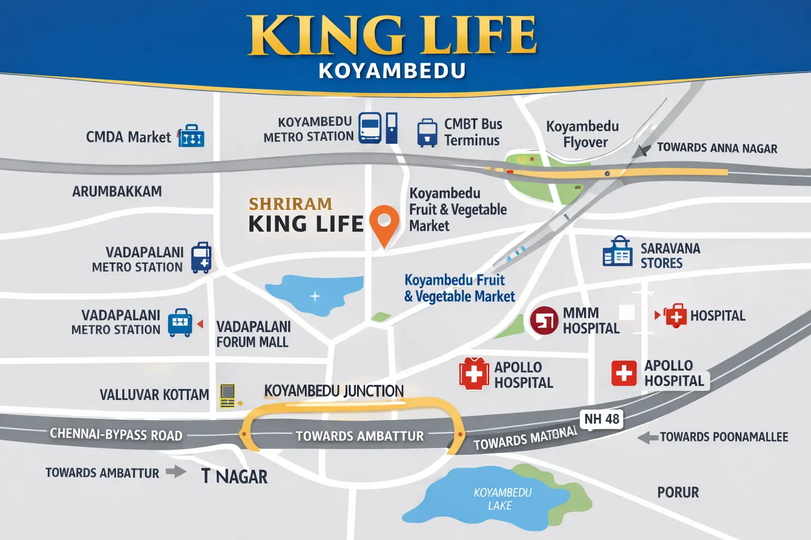

Most Chennai real estate guides talk about "upcoming" corridors, areas where the metro extension isn't live yet, where the IT park is still under construction, where prices are low today because the infrastructure hasn't arrived. Koyambedu is the opposite kind of story. It's a central Chennai locality whose defining infrastructure, an operational metro station, a functioning wholesale market, a major bus terminus and dense arterial connectivity, is already built and already working. That changes the entire investment calculation, and this guide walks through what that actually means for a buyer weighing Koyambedu against Chennai's more speculative growth corridors.
1. Where Koyambedu Sits on Chennai's Map
Koyambedu sits just off Poonamallee High Road, one of Chennai's oldest and busiest arterial roads connecting the city centre to the western suburbs. It's roughly equidistant from Chennai's traditional CBD (Anna Salai/T. Nagar) and the western IT and industrial belt running out toward Poonamallee and beyond, which is part of why it has functioned as a transit and logistics hub for the city for decades, long before "TOD" (transit-oriented development) became a planning buzzword elsewhere in Chennai.
2. The Infrastructure Is Already Live, Not Promised
The single biggest difference between Koyambedu and most of the corridors that dominate Chennai's new-launch pipeline is timing. Corridors like GST Road's outer stretches or the far end of OMR are being sold partly on the promise of a metro extension, an IT park, or a highway widening that is still years away. Koyambedu's core infrastructure is already operational:
- Koyambedu Metro Station: part of the operational Chennai Metro network, not a planned extension.
- Koyambedu Wholesale Market: one of Asia's largest wholesale perishables markets, a functioning economic anchor for the locality for decades.
- Chennai Mofussil Bus Terminus (CMBT): one of the country's largest bus terminals, sitting in the same Koyambedu locality and reinforcing it as a long-established transit hub.
- Poonamallee High Road: a mature, high-capacity arterial road connecting directly toward the city centre and the western suburbs.
For an investor, this matters because the single biggest risk in a "growth corridor" bet is timeline risk: the infrastructure that's supposed to justify future appreciation gets delayed, and you're left holding an asset in a corridor that develops more slowly than projected. In an already-arrived micro-market like Koyambedu, that specific risk is largely already priced out. What you're paying for is certainty, not potential.
3. What That Means for Pricing
The trade-off is straightforward: established, infrastructure-proven central locations command a real premium over peripheral corridors still waiting for their infrastructure story to play out. A new low-density luxury launch in Koyambedu, for instance, prices meaningfully higher per unit than comparable configurations in an outer-ring corridor like Guduvanchery or Mangadu. That premium isn't a marketing artefact, it reflects genuinely lower execution risk and, typically, stronger long-term liquidity: an established central address tends to have a deeper, more consistent resale and rental buyer pool than a corridor that's still filling in around a single new metro line.
For a buyer who's weighing "cheaper now in a growth corridor" against "more expensive now in an established address," the honest framing is that these are two different risk profiles, not simply two different price points for the same underlying bet. A growth-corridor purchase is a bet that a specific, sometimes multi-year infrastructure timeline plays out roughly as planned. An established-address purchase like Koyambedu is a bet on continuity: that a location which has already proven its demand and connectivity for years continues to do so.
4. Who Koyambedu Genuinely Suits
Koyambedu tends to suit two overlapping buyer profiles particularly well. The first is an end-user who values day-to-day convenience and wants to avoid the uncertainty of an emerging corridor, someone commuting across the city regularly, who benefits directly from operational metro access and dense road connectivity rather than a station that's still under construction. The second is an investor prioritising capital preservation and reliable rental demand over the higher (but riskier) upside a growth corridor might theoretically offer; central, transit-anchored locations in most large Indian cities have historically shown more resilient rental demand through market cycles than peripheral corridors still building out their resident base.
It's a weaker fit for a buyer whose primary goal is the lowest possible entry price per square foot, or someone specifically chasing the higher (and higher-risk) appreciation curve that a still-developing corridor can offer if its infrastructure story plays out on schedule.
5. What to Actually Check Before Buying in Koyambedu
An established location doesn't remove ordinary real estate diligence, it just shifts what's worth spending your diligence time on. In Koyambedu specifically, we'd suggest focusing on:
- Noise and traffic exposure: proximity to a major wholesale market and bus terminus is a connectivity asset, but check a specific unit's floor and facing for noise exposure during a site visit, ideally at a busy time of day.
- Building density and low-rise vs. high-rise positioning: central Chennai land parcels are typically smaller than peripheral corridor land parcels, so unit density can vary widely between projects on the same street; ask specifically how many units sit on the plot you're evaluating.
- RERA registration and construction progress: exactly as important here as anywhere else; verify the project-specific TNRERA number independently on the official portal (rera.tn.gov.in) rather than relying on a sales brochure.
- Actual travel times, not straight-line distance: a metro station or landmark "1 km away" can still mean a meaningfully longer walk or drive depending on the specific road network; confirm the real walking or driving time from the specific building entrance during your site visit.
6. Rental Demand and Resale Liquidity
Central, transit-anchored micro-markets in most large Indian cities tend to hold a structurally different tenant and buyer pool from peripheral corridors, and Koyambedu is a useful case study in why. A metro-adjacent, wholesale-market-adjacent locality draws consistent rental demand from professionals working across multiple parts of the city, not just from one nearby office park or industrial cluster, so tenant demand is less concentrated in a single employment driver than it often is in a growth corridor built around one IT park or one industrial estate. That diversification tends to matter most during a downturn: if a single large employer in a peripheral corridor scales back, rental demand there can soften sharply, whereas a central location's demand base is spread across enough different commuting patterns that it's less exposed to any one employer's decisions.
The same logic extends to resale liquidity. A flat in an established central locality is, in practice, easier to market to a wider pool of prospective buyers, end-users who want the convenience, investors who want reliable rental yield, and buyers relocating from elsewhere in the city, than a flat in a corridor whose long-term trajectory is still an open question. That liquidity premium doesn't show up as a single number on a brochure, but it's a real, practical factor worth weighing against a lower headline price per square foot elsewhere.
7. A Worked Example: Shriram Kinglife Koyambedu
To make this concrete, consider Shriram Kinglife Koyambedu (formally Shriram Codename King Life), a low-density 3 & 4 BHK tower by Shriram Properties sitting roughly 1 km from both Koyambedu Metro Station and the Koyambedu Wholesale Market. It's positioned at the ultra-luxury end of the market, starting from ₹2.36 Cr* onwards, and its core pitch is exactly the trade-off this guide describes: a smaller, 135-unit, low-density format on just 1.96 acres, in exchange for an already-proven central address rather than a larger, cheaper development on Chennai's periphery. We've covered the project's pricing, RERA status and floor plan situation in detail in our dedicated project review, worth reading alongside this locality guide if Koyambedu itself is on your shortlist.
Our Honest Assessment
Koyambedu isn't a corridor to bet on, it's a location to buy into. That's a meaningful distinction: you're not paying for the possibility that infrastructure arrives on schedule, you're paying a premium for infrastructure that's already there and has been serving the area for years. For a buyer prioritising certainty, day-to-day convenience and durable rental demand over the highest theoretical appreciation, that premium is usually worth it. For a buyer purely optimising for the lowest entry price per square foot, a still-developing corridor elsewhere in Chennai will likely offer a cheaper way in, at the cost of taking on the infrastructure-timeline risk that Koyambedu has already retired. As with any Chennai purchase, verify RERA registration independently, confirm construction progress directly with the developer, and check title and encumbrance documents before booking.